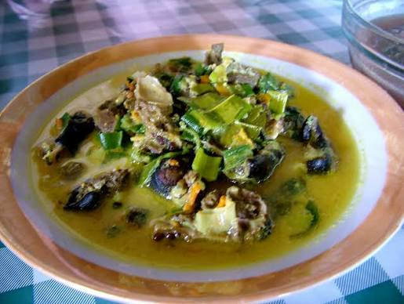
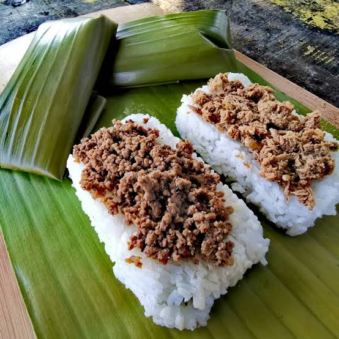
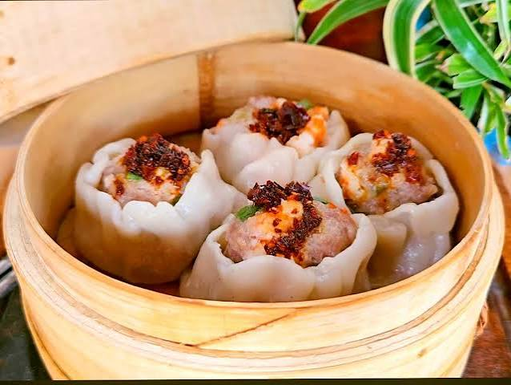

Description:
Bat soup is a traditional dish found in certain parts of Asia and the Pacific Islands. It is prepared using bat meat simmered in a flavorful broth with herbs, spices, and vegetables. The soup has a distinctive appearance and is considered a cultural delicacy in some communities.
Ingredients:
- Water or broth
- Bat meat (traditionally used)
- Garlic and onions
- Ginger
- Salt and pepper
- Fresh herbs and spices
- Vegetables

Description:
Pastil is a popular Filipino rice dish from Mindanao, made with steamed rice topped with flavorful shredded chicken or beef, seasoned with spices and wrapped in banana leaves. It is an affordable, delicious, and convenient meal commonly enjoyed for breakfast or lunch.
Ingredients:
- Cooked white rice
- Shredded chicken or beef
- Garlic
- Onion
- Soy sauce
- Cooking oil
- Banana leaves

Description:
Pork Siomai is a delicious steamed dumpling filled with seasoned ground pork and vegetables, wrapped in a soft, thin wrapper. Topped with savory chili garlic sauce, it offers a juicy, tender texture and rich flavor. It is a popular Filipino street food, often enjoyed as a snack or served with steamed rice.
Ingredients:
- Ground pork
- Siomai wrappers
- Carrots
- Onion
- Garlic
- Soy sauce
- Salt and pepper